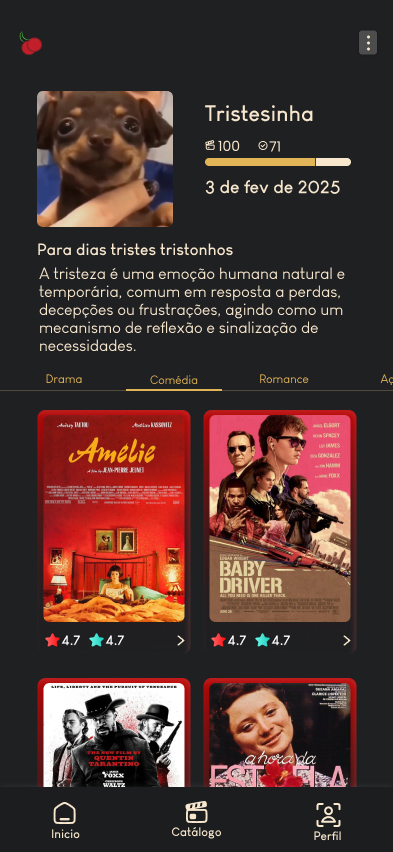

MoodFlix
Aplicação desenvolvida para resolver um problema comum no consumo de entretenimento: a indecisão. O MoodFlix transforma a escolha de filmes em um processo rápido e personalizado, utilizando categorias baseadas no humor e um sistema de sorteio inteligente.
Problema
Usuários frequentemente gastam mais tempo escolhendo o que assistir do que consumindo o conteúdo em si.
Plataformas de streaming oferecem grande variedade, porém sem considerar o estado emocional do usuário, tornando o processo de decisão cansativo e ineficiente.
Solução
O MoodFlix permite que o próprio usuário construa sua base de filmes, organizando-os em categorias personalizadas baseadas no humor e contexto.
- Filmes para relaxar
- Filmes para refletir
- Filmes leves
- Filmes intensos
- Filmes para momentos sociais
A partir dessas categorias, o sistema oferece uma experiência dinâmica de escolha:
- Visualização organizada da biblioteca pessoal
- Filtragem por humor ou contexto
- Sorteio inteligente de filmes
- Geração de listas ordenadas automaticamente
Lógica do Sistema
O núcleo da aplicação está na manipulação de dados e na lógica de seleção. O sistema utiliza estruturas de arrays, filtragem dinâmica e geração de resultados aleatórios controlados para garantir variedade sem perder relevância.
A lógica foi construída para manter consistência na experiência, evitando repetições frequentes e respeitando o contexto escolhido pelo usuário.
Diferencial
Diferente de um simples sorteador, o MoodFlix trabalha com intenção. O usuário define o tipo de experiência que deseja, e o sistema adapta a escolha com base nesse contexto.
Isso transforma uma decisão aleatória em uma recomendação personalizada.
Resultado
A aplicação reduz significativamente o tempo de decisão, melhora a experiência do usuário e cria uma interação mais objetiva com o conteúdo.
O sistema também incentiva organização pessoal e reutilização de dados, tornando-se uma ferramenta prática no dia a dia.
Interface do Sistema

Aprendizados
O desenvolvimento do MoodFlix reforçou conceitos fundamentais de lógica de programação, como manipulação de arrays, filtragem de dados e geração de resultados dinâmicos.
Além disso, consolidou a importância de alinhar lógica com experiência do usuário, criando soluções que são não apenas funcionais, mas também úteis e intuitivas.